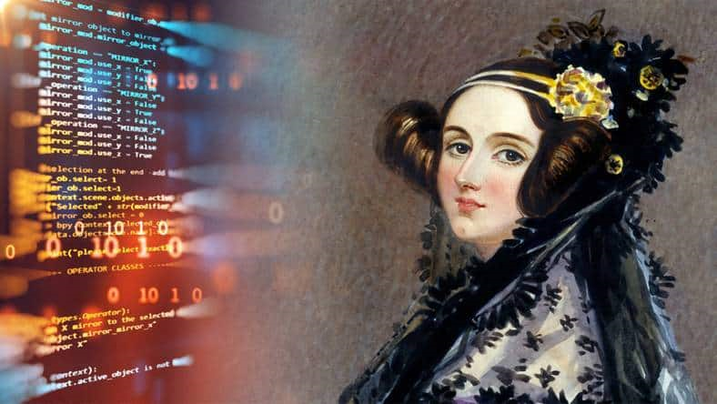

A WoMakersCode segue o legado de Ada Lovelace
Nossa missão é inspirar e empoderar mulheres na tecnologia, oferecendo cursos, mentorias, eventos e apoio a empregabilidade.
Saiba mais
Nossa missão é inspirar e empoderar mulheres na tecnologia, oferecendo cursos, mentorias, eventos e apoio a empregabilidade.
Saiba maisAda Lovelace foi uma mulher extraordinária que desafiou os limites da sua época. Ela combinou a paixão pela poesia com a genialidade da matemática, e criou a linguagem dos computadores. Ela colaborou com Charles Babbage, um visionário que projetou a primeira máquina capaz de processar dados. Ada Lovelace imaginou que os computadores poderiam fazer mais do que apenas cálculos numéricos. Ela previu que eles poderiam criar música, arte e ciência. Ela foi a primeira a entender o potencial da tecnologia para transformar o mundo. Ela foi uma pioneira, uma inovadora e uma inspiração para as mulheres na tecnologia. Ela viveu apenas 36 anos, mas deixou um legado que dura até hoje.
Augusta Ada Byron King , mais conhecida como Ada Lovelace devido a seu titulo de Condessa de Lovelace, foi uma mulher, mãe, matemática e escritora brilhante. Postumamente conhecida como encantadora de números, mãe dos softwares e criadora do primeiro programa de computadores da história (tantos títulos quanto Daenerys Targaryen). Nascida em 10 de dezembro de 1815 em Byron, Londres, Ada era filha única legítima de Anne Isabella Byron, matemática de família nobre e Baronesa de Wentworth, e Lord Byron (sim, aquele poeta romântico, escritor de uma das versões de Don Juan). Mas antes que Ada pudesse completar 2 meses de vida, seus pais se separaram e seu pai deixa a Inglaterra quatro meses depois. Byron morre quando a filha teria 8 anos de idade, durante a Guerra de Independência Grega, e Ada só viria a ver um retrato do pai após seus 20 anos de idade.
Numa tentativa de impedir com que a filha desenvolvesse a insanidade que ela via em Lord Byron e as perigosas tendências poéticas, além do interesse pelo pai, Anne buscava manter Ada ocupada com os estudos em música e matemática, em particular a lógica matemática. E, mesmo que para os costumes da época Anne devesse posar como boa mãe, sabe-se que a relação das duas não era lá muito boa. Em uma carta de Ada para sua mãe, quando já tinha por volta de 30 anos, Ada escreve: “if you can’t give me poetry, can’t you give me “poetical science?” ” (Se você não pode me dar poesia, não pode me dar ciência poética?) . Aos 12 anos, fica fascinada por aves e pássaros, e desenha um pássaro mecânico que bate asas, publicando um livro com seus estudos, observações e ilustrações chamado Flyology.
Quando ainda jovem, Ada conhece Charles Babbage, que na época, direcionava todos os seus esforços no desenvolvimento da Máquina Diferencial e daí surge o protagonismo de Ada no desenvolvimento do primeiro algoritmo. Ada casa-se aos 20 anos com William Lord King, que foi nomeado Conde de Lovelace em 1838, e torna-se Condessa de Lovelace. Em 1952, morre de câncer de útero, aos 36 anos de idade e deixa três filhos: Byron, Anabella e Ralph.